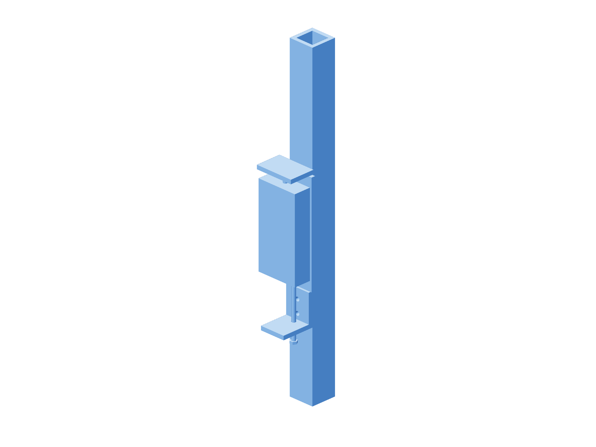

Retention / actual load107 / 179
Bound the actual carried Z load
The carried metal, bearings, hardware, gun and cable all contribute. Their measured weight and vertical cable pull set the installed gravity bound.
AddNo new parts
Tools / setupAccepted scale record · 500 N gauge / rigid fixture · actual gun / liner / supported cable · independent catches

- Keep the complete head supported. Weigh carried parts separately below the scale’s 2 kg capacity; use the 500 N gauge for heavier subassemblies.
- Include every plate, bearing, spring, fastener, wire and gun attachment. Record mass/force uncertainty and preserve the assembled-load inventory.
- Take the full head load through gauge/platen before disconnecting its actuator output. Record supported load and controlled onset in both feed directions through the accepted cable poses.
- Include rail stiction, vertical cable pull and complete uncertainty in the worst load. Restore actuator hardware and a fresh observed datum before motion.
Ready when
The complete actual upper Z load is ≤300 N and the downward seat’s measured lower lift threshold is ≥390 N; no load is omitted or double-counted. An excessive or unbounded load fails this configuration. Add passive support/counterbalance or redesign the carried mass before loaded motor motion.
The 300 N screen includes physical load uncertainty. CAD density estimates and printed settings do not accept the actual assembly weight.